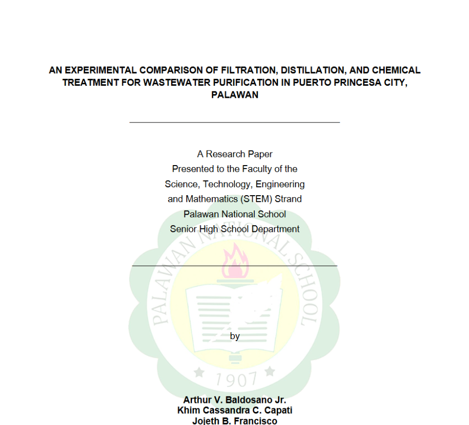
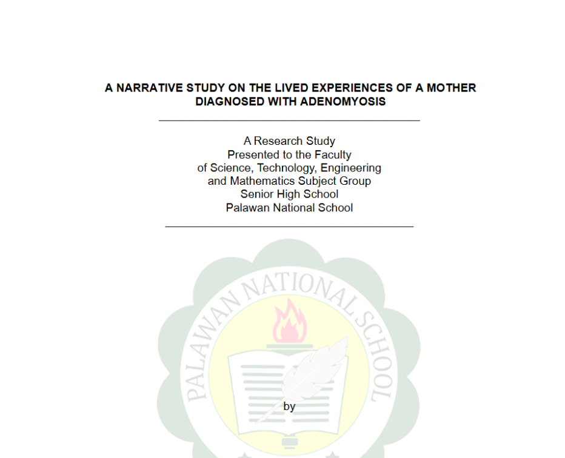

Published Research
Formal research papers published under my name on Zenodo and open academic repositories. More works are being uploaded and will appear here as they are published.
Published Papers

Research · January 2024
An experimental study comparing filtration, distillation, and chemical treatment as wastewater purification methods in Puerto Princesa City, Palawan. Evaluated each approach using pH level and processing time as primary metrics.

Research · May 2024
A qualitative narrative study on the lived experiences of a mother diagnosed with adenomyosis in Palawan, Philippines. Explores her physical symptoms, emotional struggles, and how faith, family, and community became her coping mechanisms.